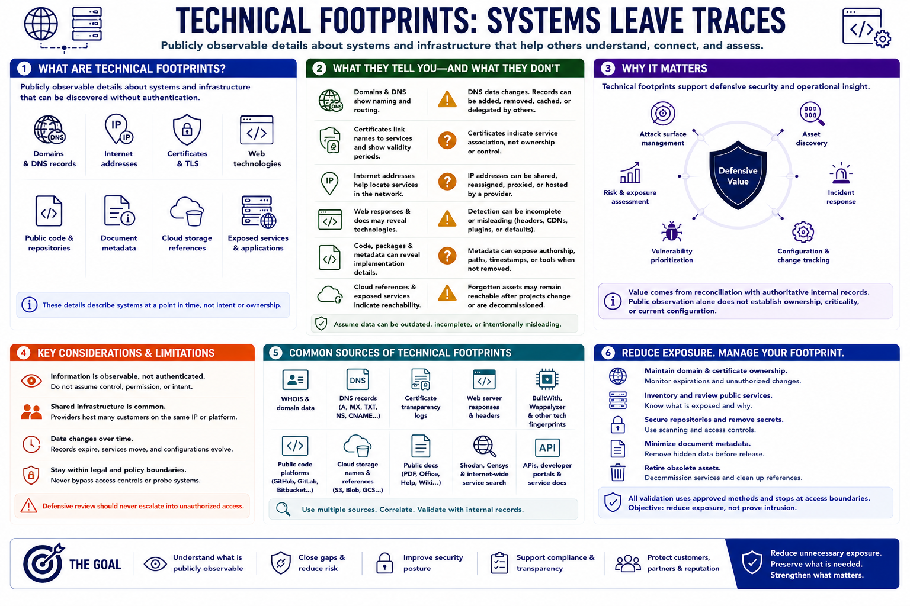

Technical Digital Footprints
Connecting to LMS... Progress: in progress

Narration
Technical footprints are publicly observable details about systems and infrastructure. They can include domains, DNS records, internet addresses, certificates, web technologies, public code, document metadata, cloud-storage references, and services intentionally exposed to the internet.
Domains and DNS records describe naming and routing at a point in time. Certificates can associate names with public services and indicate issuance periods. Internet addresses may be shared, reassigned, proxied, or hosted by a provider, so they should not be treated as permanent ownership evidence.
Web responses and public documentation may identify technologies or versions, but detection can be incomplete or misleading. Public code and package files may reveal dependencies and development practices. Metadata can expose authorship, software, paths, or timestamps when not removed before release.
Cloud references and exposed services matter because forgotten assets can remain reachable after projects change. A service may be authorized but poorly inventoried, or a storage reference may reveal naming without providing public access. Defensive review should never escalate into bypassing access controls.
Technical footprints support attack-surface management, asset discovery, vulnerability prioritization, and incident response. Their value comes from reconciliation with authoritative internal records. Public observation alone may not establish ownership, criticality, or current configuration.
Organizations should maintain domain and certificate ownership, review public services, secure repositories, remove secrets, minimize document metadata, and retire obsolete assets. All validation should use approved methods and stop at access boundaries. The objective is to reduce exposure, not demonstrate that a system can be intruded upon.